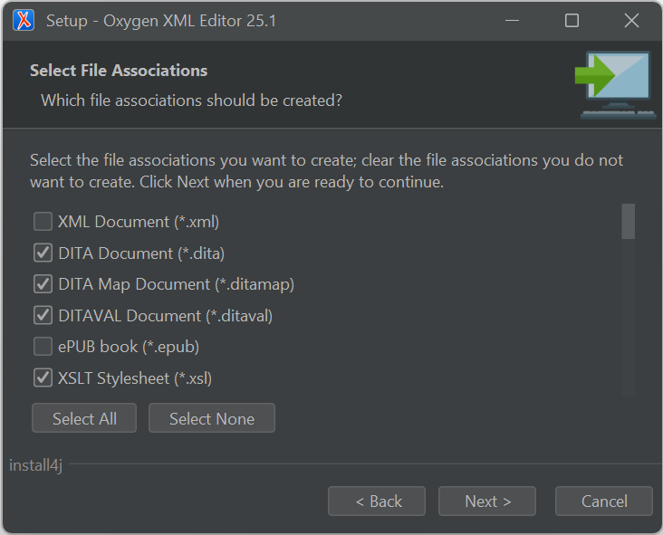

Double-click the previously downloaded file named
oxygen-64bit-openjdk.exe and wait for the
installation wizard to begin.
By default, all downloaded files are located in the
Downloads folder inside the Windows user
directory
In the (Language selection) dialog box, make sure English is set and click OK.
In the (User Account Control) dialog, click Yes to allow the Oxygen XML Editor installer to make changes on your computer.
Follow the on-screen instructions and confirm your choices with the Next button.
At the (Select File Associations) stage, you can leave the default associations or optionally customize the selection to your liking. Click Next and complete the installation.
Figure 1. Selection of file associations

In the final installation step, make sure that Run Oxygen XML Editor option is checked and click Finish.
Oxygen XML Editor 25 has been installed successfully.